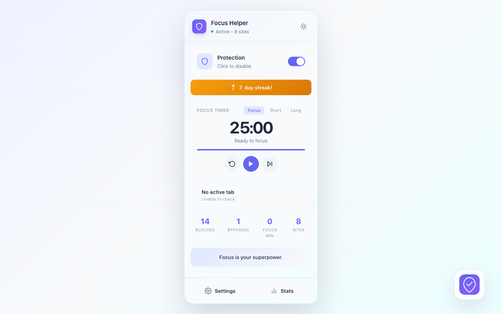
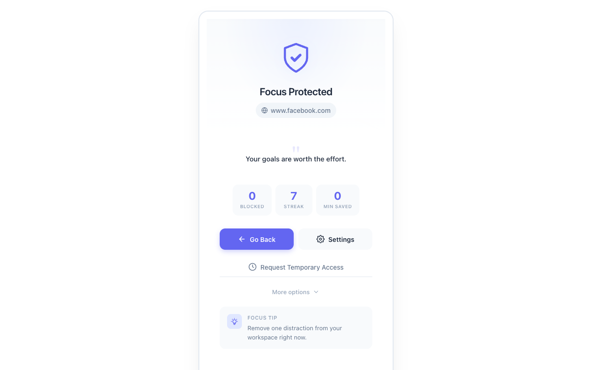
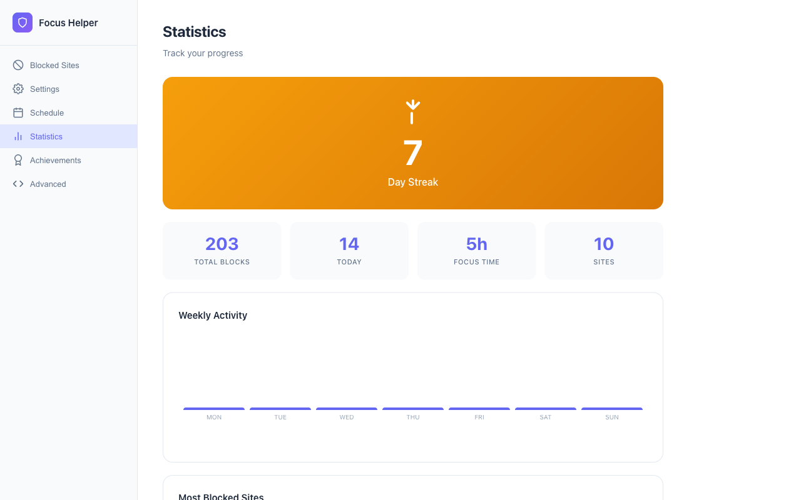

Block chosen sites
Create a custom block list for social media, news, entertainment, or any site that pulls you away from the task.
Private focus support for busy brains
ADHD Focus Helper adds gentle friction before distracting websites, with local settings, temporary access, and progress insights that stay on your device.

Made for moments when intention is present, but impulse is faster.
What it helps with
Create a custom block list for social media, news, entertainment, or any site that pulls you away from the task.
Temporary access adds a quick challenge so opening a distraction becomes a deliberate choice, not a reflex.
Local stats, streaks, and focus sessions help you understand patterns without judgment or external tracking.

Gentle friction
The blocked screen gives you a pause, a small challenge, and a way back to what you meant to do. The language stays supportive and practical.
Privacy-first by design
Personal insights
Stats are there to help you notice momentum, not to judge you. They are generated in your browser and used only for your own view.

Install ADHD Focus Helper and set up your first focus list in minutes.
Open Chrome Web Store